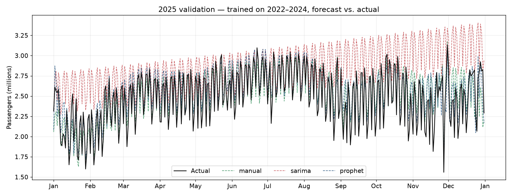
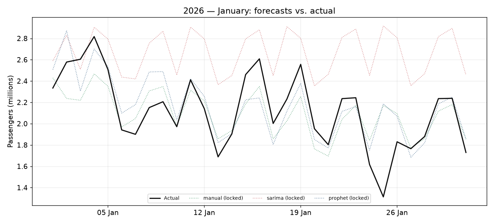
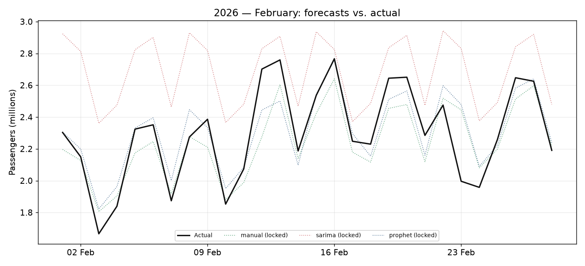
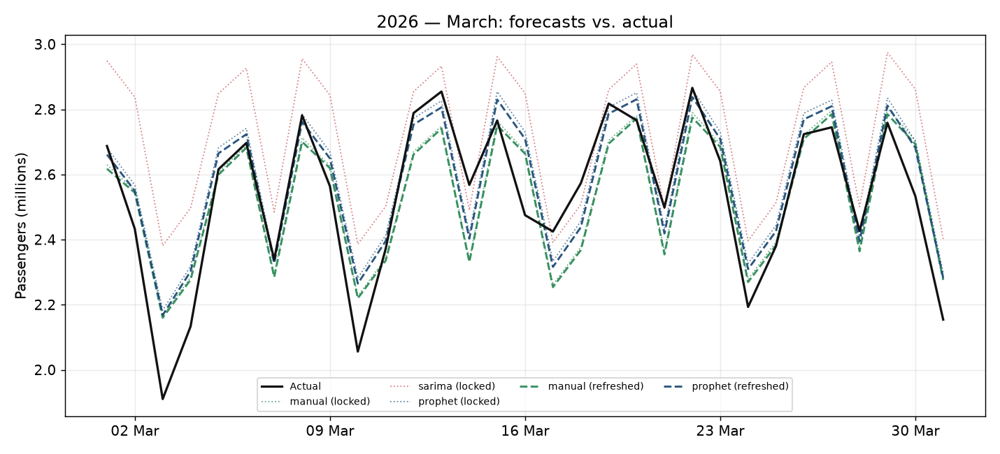
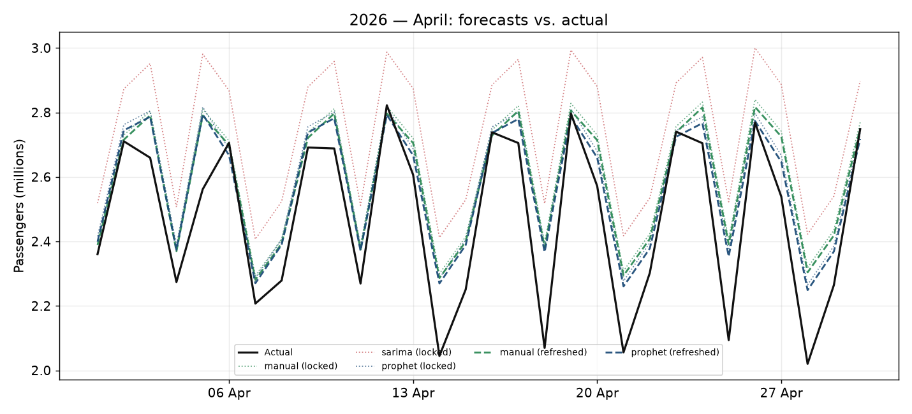
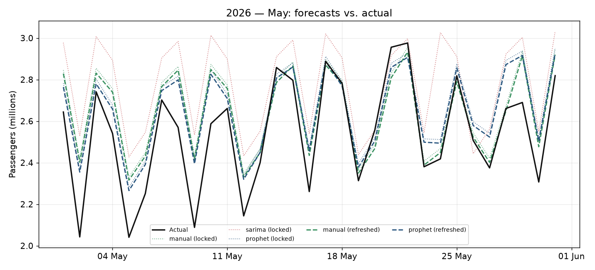
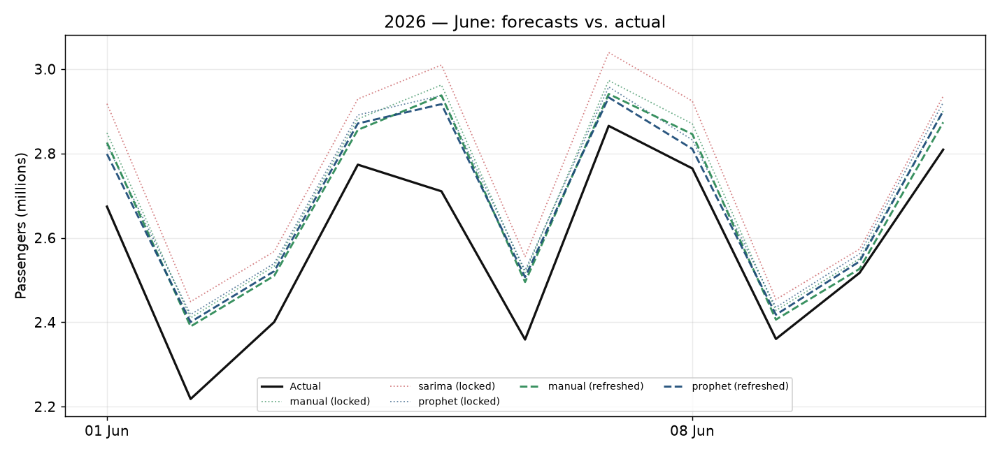
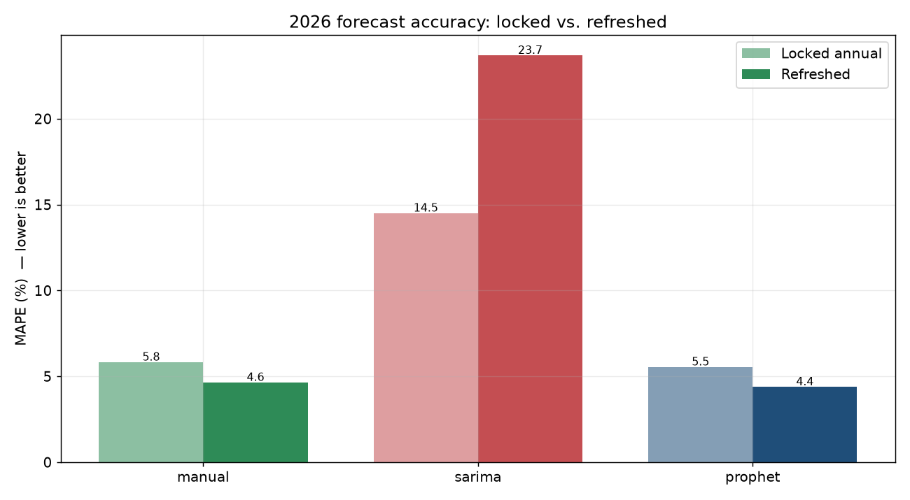

A forecasting system, tested the way a real planning team would test it
The U.S. Transportation Security Administration publishes the number of passengers screened at its checkpoints every day. It is one of the cleanest public proxies for travel demand that exists: daily resolution, strong weekly rhythm, sharp holiday structure, and seven unbroken years of history.
This project uses that data to answer a practical question: how accurately can next year's daily demand be predicted, and does the forecast hold up when checked against what actually happened? Three models are built, each forecast is made on data the model has never seen, and every result on this page is scored against real actuals — nothing is fitted in hindsight.
Train on 2022–2024 → forecast 2025 → score against real 2025 → refit through 2025 → forecast 2026. The year being predicted is never part of the training data.
2025: forecast first, then compare
The models were trained only on 2022–2024 and asked to forecast all of 2025. Holding the entire year back is the real test — anyone can fit a curve to data they've already seen. The black line is what actually happened; the dashed lines are the three forecasts, made before any of it was known.

| Model · 2025 | MAPE | Bias | Accuracy* |
|---|---|---|---|
| Manual decomposition | 5.27% | +1.08% | 94.7% |
| Prophet | 5.34% | +2.94% | 94.7% |
| SARIMA | 16.19% | +14.84% | 83.8% |
*Accuracy = 100% − mean daily absolute percentage error. Lower MAPE and bias are better.
The hand-built decomposition model edges out Prophet on the year it had never seen — a model written from first principles matching a purpose-built forecasting library.
One built by hand, two as benchmarks
Manual decomposition
A multiplicative model built from scratch, with no forecasting library: passengers = level × annual × day-of-week × holiday × bridge. The level is a damped log-linear trend; the annual shape comes from six Fourier harmonics of day-of-year; day-of-week and holiday effects are geometric-mean factors; and "bridge" factors capture the travel surge on the days around a holiday — because the holiday itself is usually a low-travel day. Every component is inspectable.
Prophet
Facebook's forecasting library, given the full U.S. federal-holiday calendar. It fits trend, weekly and yearly seasonality, and holiday effects jointly. The benchmark to beat.
SARIMA
A classical statistical model — SARIMA(1,1,1)(1,1,1,7) on log passengers. It captures the weekly cycle but has no annual term, included deliberately to show what holiday-aware modelling adds.
You can't re-plan a month you're already in
A real planning team can't rewrite February's staffing once February has started. So the 2026 forecast runs two ways. The locked annual forecast is made once, from data through end-2025, and frozen for the whole year. The refreshed forecast retrains as each month's actuals close — but with a one-month lock-out: data through end of January can only revise March onward, because February is already underway.
So January and February show three locked forecasts against actual. From March, the refreshed lines (manual and Prophet) appear alongside them — letting you see directly whether retraining on fresh data helps.
Refit on a short window, SARIMA collapses downward — its bias swings from +12.9% to −24%, worse than leaving it frozen. That fragility is a finding in itself: classical models need careful retraining, so it's kept out of the refreshed panels and flagged in the comparison below.
Forecasts vs. actual, as the year unfolds
Solid black is actual. Dotted lines are the locked annual forecasts; bolder dashed lines (from March) are the refreshed forecasts. Each panel is the real comparison for that month.

January · 3 locked + actual
February · 3 locked + actual
March · refreshed lines begin
April · locked + refreshed
May · locked + refreshed
June · through data cut-offThrough April and May the forecasts sit slightly above actual. That's not a glitch — 2026 demand flattened against the growth the models learned from 2022–2025. No model trained on history predicts a trend break the moment it happens; catching it is the job of the refresh and the monitoring, which is exactly why both exist.
How often was the forecast usable?
For planning, what matters isn't just the average error — it's how many individual days land within a usable margin. Below: mean daily forecast accuracy (1 − |actual − forecast| ÷ actual) and the share of days at or above 90% accuracy, per month, for the strongest model of each type.
| 2026 | Manual (locked) | Prophet (locked) | Prophet (refreshed) |
|---|---|---|---|
| January | 91.0% · 74% | 91.3% · 74% | — |
| February | 94.8% · 93% | 95.4% · 96% | — |
| March | 96.1% · 97% | 96.1% · 90% | 96.4% · 94% |
| April | 94.4% · 83% | 95.1% · 83% | 95.6% · 87% |
| May | 94.4% · 84% | 94.3% · 87% | 94.8% · 90% |
| June | 94.9% · 100% | 95.1% · 100% | 95.8% · 100% |
Each cell: mean daily accuracy · share of days ≥ 90% accurate.
January is the hardest month — furthest from the training cut-off and deep in volatile post-holiday travel — and accuracy climbs steadily as the year settles. Refreshing the forecast lifts both the average and the share of usable days.
Does refreshing help? Yes — for the models worth refreshing

| 2026 · MAPE | Locked | Refreshed | Change |
|---|---|---|---|
| Prophet | 5.54% | 4.38% | −1.16 |
| Manual | 5.82% | 4.64% | −1.18 |
| SARIMA | 14.50% | 23.68% | +9.18 |
Prophet and the manual model both improve by more than a full percentage point when retrained on fresh data. SARIMA gets worse — it destabilises under short-window refit. Refresh cadence isn't a free lunch; it's a decision that depends on the model.
The verdict
Prophet (refreshed) is the most accurate; the manual model is the most instructive.
Prophet refreshed: 4.38% MAPE · Manual refreshed: 4.64% MAPE
For day-level demand forecasting, anything in the ~5% range is at the contact-center industry standard. Both leading models clear it. Prophet wins by a whisker on accuracy, but the hand-built decomposition — which actually beat Prophet on the 2025 validation year — proves the result isn't a black box: every factor it uses can be read, explained, and defended.
- Use the holiday-aware models (Prophet, manual). SARIMA is a benchmark, not a planning tool.
- Refresh monthly under a locked horizon — it reliably improves the models that can take it.
- Watch bias, not just error size: a small but consistent over-forecast is the early signal of a demand shift.